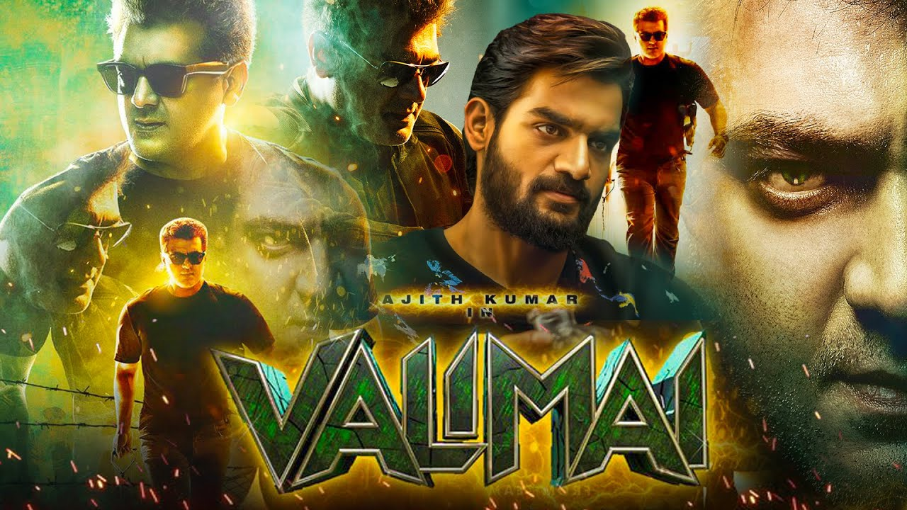
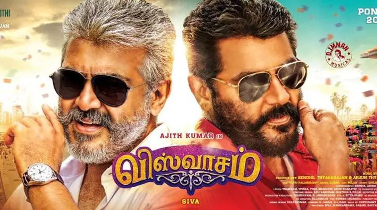
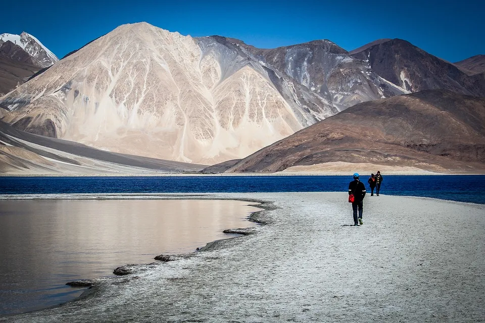
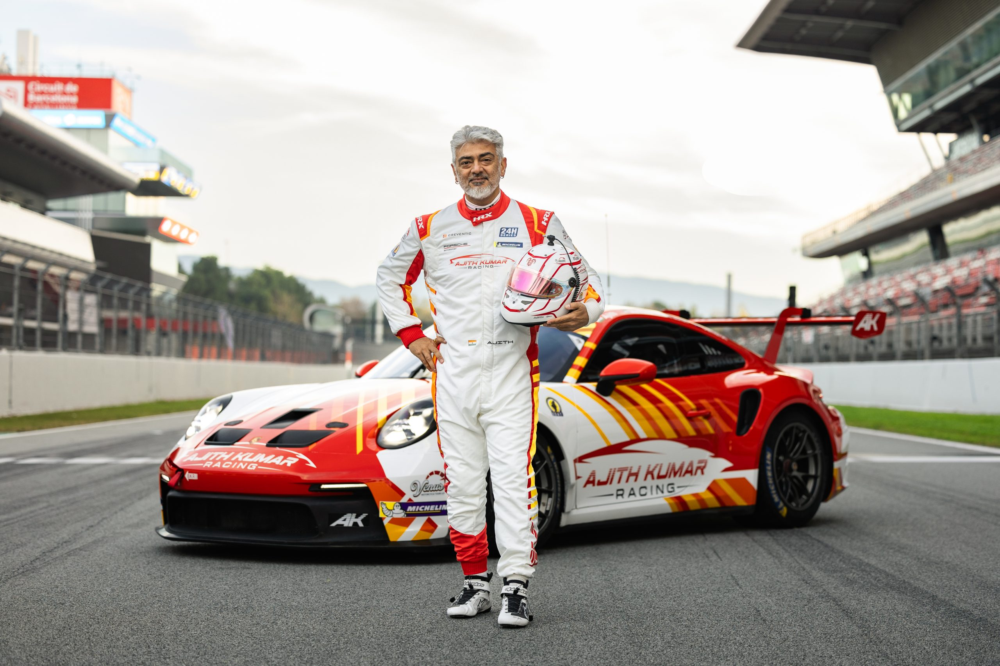
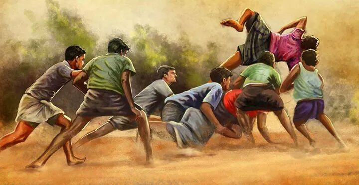
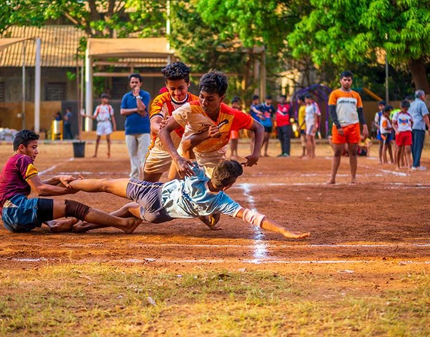

Favorites..
🍛 My Favorite Food


My favorite food is Biryani because of its rich aroma, delicious taste, and flavorful spices.
I also enjoy Ice Biryani as a unique and refreshing variation.
Biryani is my first choice
whenever I celebrate special occasions or eat with my family and friends.
🎬 My Favorite Movie Genre


My favorite movie genres are Historical and Adventure.
Historical movies teach me about
great kingdoms, brave warriors,
and important events from the past. Adventure movies are
exciting because they include
thrilling journeys, exploration, and action-packed stories
that keep me entertained.
📍 My Favorite Place


My favorite place is my hometown because it is filled with beautiful memories, peaceful surroundings, and the love of my family. I enjoy spending time there, relaxing with friends, and visiting the places that remind me of my childhood.
🎭 My Favorite Actor


My favorite actor is Ajith Kumar. I admire him for his confidence, dedication, and humble personality. His action movies, powerful performances, and inspiring real-life attitude make him one of my favorite actors in the Tamil film industry.
🤼 My Favorite Sport


My favorite sport is Kabaddi. It is a traditional game that requires strength, speed, teamwork, and quick decision-making. Playing Kabaddi helps improve physical fitness, confidence, and coordination. I enjoy both watching and playing this exciting sport with my friends.